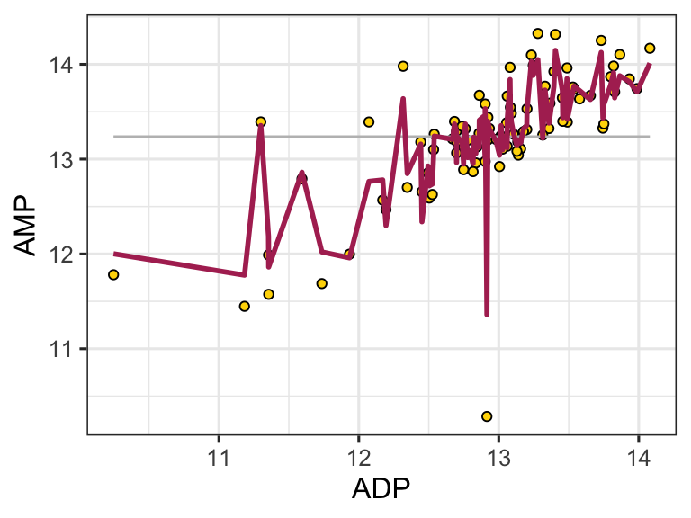

figures & captions
A high quality figure is one in which, for example, axes tick labels do not overlap but also fill the space available to them, colors are used, raw data is plotted (if possible), axes labels are customized, an appropriate theme is chosen, and geoms are chosen carefully. The plots should be visually attractive and professional.

1.42 Components of a caption
- Title - an overall description of the what is shown
- For each subplot:
- The type of plot (line plot, bar chart, etc.)
- Describe what is plotted as y vs x in words.
- Describe what each bar, point, or error bar represents.
- If applicable, describe the number of independent samples or measurements (sometimes called “replicates”) that underlie a given geometric feature or summary statistic.
- Describe where the data are from.
- Avoid abbreviations, but if you do use any, specify what they mean.
An example:
ggplot(
data = filter(alaska_lake_data, element_type == "bound"),
aes(y = lake, x = mg_per_L)
) +
geom_col(
aes(fill = element),
alpha = 0.5, size = 0.5, position = "dodge",
color = "black"
) +
facet_grid(park~., scales = "free", space = "free") +
theme_bw() +
scale_fill_brewer(palette = "Set1") +
scale_y_discrete(name = "Lake Name") +
scale_x_continuous(name = "Abundance mg/L)") +
theme(
text = element_text(size = 14)
)
Fig. 1: Carbon, nitrogen, and phosphorous in Alaskan lakes. A bar chart showing the abundance (in mg per L, x-axis) of C, N, and P in various Alaskan lakes (lake names on y-axis) that are located in one of three parks in Alaska (park names on right y groupings). The data are from a public chemistry data repository. Each bar represents the result of a single measurement of a single analyte, the identity of which is coded using color as shown in the color legend. Abbreviations: BELA - Bering Land Bridge National Preserve, GAAR - Gates Of The Arctic National Park & Preserve, NOAT - Noatak National Preserve.
1.43 Exporting graphics
To export graphics from R, consider the following:
png(filename = <path_to_file_you_want_to_create>, width = 10, height = 10, res = 600, units = "in")
cowplot::plot_grid(peak_1_to_plot, peak_2_to_plot, peak_3_to_plot,
peak_4_to_plot, peak_5_to_plot, align = "v", axis = "b", labels = c('Peak 1','Peak 2','Peak 3', 'Peak 4', 'Peak 5'), ncol = 1, label_x = 0.4)
dev.off()The